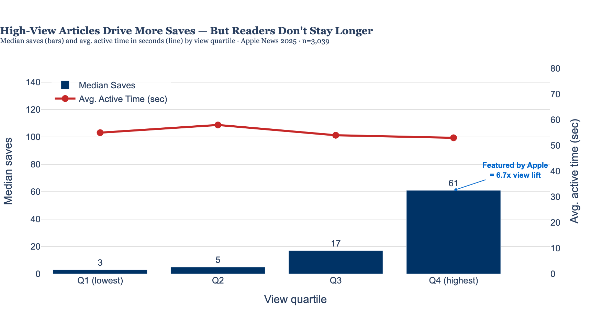
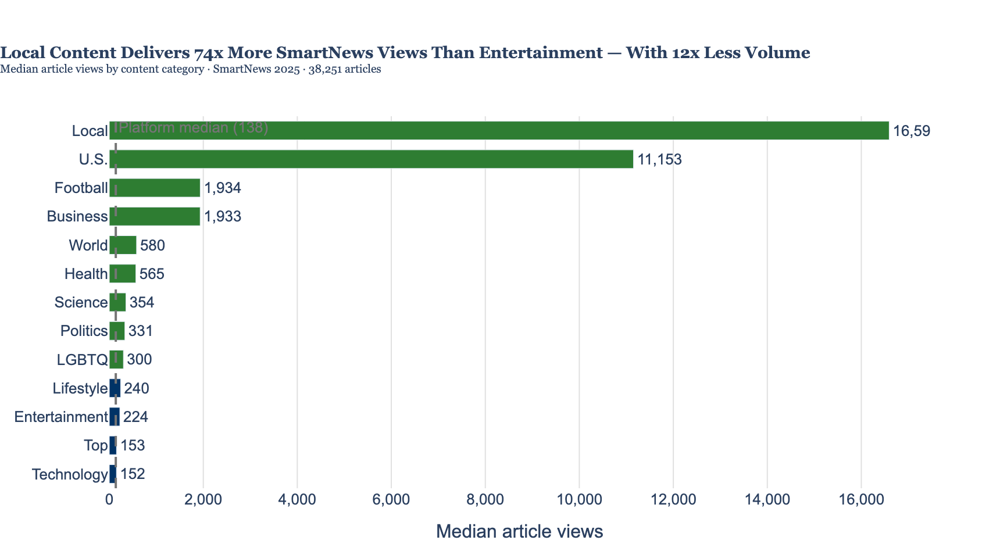
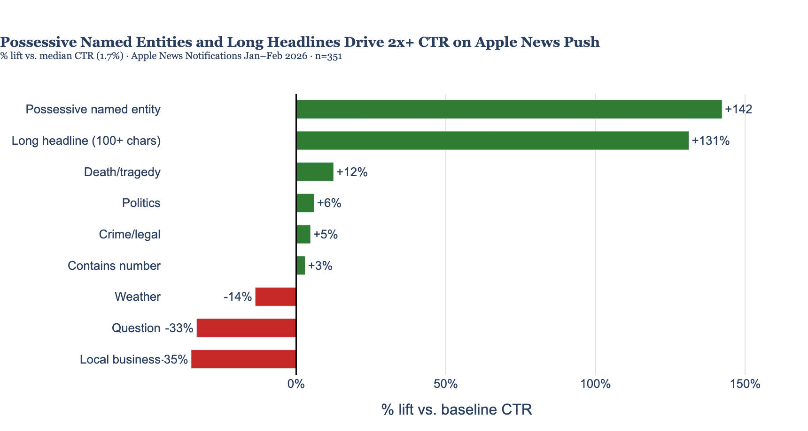
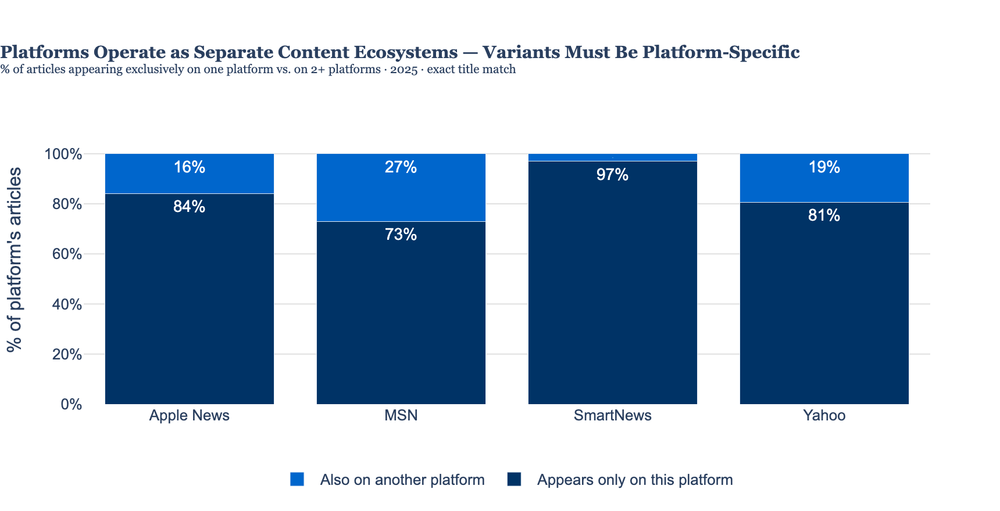

An analysis of 47,000+ article-platform records across Apple News, SmartNews, MSN, and Yahoo — built to establish the ROI baseline for calibrating AI variant production by article type and platform.
The strategic implication for variant allocation: Platforms don't share audiences or content. Article type × platform combinations have measurably different ROI profiles. These are the inputs the allocation model needs — and this analysis establishes the historical baseline to build from.
The Justin Frame executive deck is credible work on a narrow question: which article types and headline formulas drive the most page views. Its headline formula findings largely hold up. But the deck conflates reach with quality — and our data provides the counterevidence.
The Frame deck's implicit logic is: page views signal content quality, and quality drives long-term ROI. That's a reasonable prior — but our Apple News 2025 dataset is one of the few that includes both views and active reading time, letting us test it directly. It doesn't hold.
The Frame deck measures demand. It tells you which article types and headlines attract clicks. That's genuinely useful for generating traffic. What it cannot tell you is whether readers who clicked stayed, read, saved, or came back — the behavioral signals that predict subscriber retention and longer-term value.
Our data shows reach and depth are statistically uncorrelated. An optimization strategy built on page views alone is optimizing one dimension of a two-dimensional problem.
| Frame claim | Verdict | Our evidence |
|---|---|---|
| "Here are X takeaways" is the top formula | Confirmed | Number-containing headlines perform at or above CTR baseline in our notification data |
| "What to know" — subject specificity is everything | Confirmed | Validated in CTR analysis; vague subjects flatline regardless of CTA ending |
| Leading with a number outperforms | Confirmed | Number-lead construction consistently at or above baseline CTR |
| "Here's a look" is underused and strong | Plausible, unconfirmed | Frame had 2 data points; our notification sample can't isolate this formula at scale |
| Wildlife/science dominates by topic | Platform-specific | True for Commons/Discover. SmartNews app-based data shows Local and U.S. National dominate — different algorithm, different audience |
| Celebrity stories punch highest per-story | Commons-specific | True in Frame's Commons dataset; celebrity's weight in T1 app-based distribution is unconfirmed in our data |
| High PVs = content quality = ROI | Not supported | Active reading time has r=−0.01 with total views (p=0.44, n=3,037). The depth signal is independent of reach. |
The Apple News 2025 dataset — 3,037 articles, full year — contains both Total Views and Avg. Active Time in seconds. Most distribution data gives you one or the other. This dataset gives both, making it possible to test the "clicks = quality" assumption directly.
Articles were split into ten equal groups by total views. The top decile averaged 333,654 views. Their median active reading time: 53.5 seconds. The bottom decile averaged 425 views. Their median: 55 seconds. The 9-second spread across the entire range — from near-zero traffic to viral-scale articles — is the finding. The dot positions below represent each decile's median active time on a 40–70 second scale.
| View decile | Median views | Median active time | 40s ←——— 70s |
|---|---|---|---|
| D1 — lowest 10% | 425 | 55s | |
| D2 | 638 | 55s | |
| D3 | 875 | 58s | |
| D4 | 1,235 | 60s | |
| D5 | 2,109 | 56s | |
| D6 | 3,281 | 54s | |
| D7 | 5,437 | 52s | |
| D8 | 10,864 | 58s | |
| D9 | 17,525 | 51s | |
| D10 — top 10% | 333,654 | 53.5s |
All ten deciles fall within a 9-second band (51s–60s). Views span 425 to 333,654 — a 785× range. Reading time barely moves.

Articles surfaced by Apple's editorial algorithm get dramatically more views (median 10,911 vs. 1,619). But their median active time is 51 seconds — six seconds shorter than non-featured articles (57s), a statistically significant difference (Mann-Whitney p < 0.0001).
What this means: Apple's editorial promotion drives discovery, not depth. Readers who find an article because the algorithm surfaced it are less engaged on average than readers who sought it out. "Featured by Apple" inflates view counts while slightly diluting engagement quality — both effects should factor into how that metric is weighted in the ROI model.
Apple News+ subscribers have a median active time of 49 seconds on subscription content. Non-subscribers on free content read for 56 seconds. Subscribers are likely efficient, high-frequency readers who scan more and move on — not a quality problem, but a behavioral difference that matters when comparing engagement metrics across paywalled vs. free articles.
Active time is uncorrelated with views (r=−0.01). But saves are strongly correlated (r=0.82), as are likes (r=0.77) and article shares (r=0.68). High-view articles generate more save and social behavior — but not more reading depth. Saves proxy intent to return. Active time proxies depth of the current read. Both matter. They measure different things.
What this means for the variant allocation model: View count alone is an incomplete ROI signal. A variant that drives 5,000 views with 75s average active time may deliver more subscriber retention value than one that drives 20,000 views with 45s. The model should incorporate at minimum: views (reach), saves (return intent), and active time (depth) — weighted by what best predicts subscriber behavior for this audience.
SmartNews 2025 is the richest dataset for content-type analysis: 38,251 article records with category channel data showing which editorial buckets drove views. The ROI gap between categories isn't marginal — it's structural, and it runs counter to where production effort is concentrated.

| Category | Articles | Median views | vs. Entertainment |
|---|---|---|---|
| Local | 1,097 | 16,593 | +74× |
| U.S. National | 909 | 11,153 | +50× |
| Football | 276 | 1,935 | +8.6× |
| Business | 125 | 1,933 | +8.6× |
| World | 120 | 580 | +2.6× |
| Health | 235 | 565 | +2.5× |
| Lifestyle | 3,156 | 241 | +1.1× |
| Entertainment | 13,713 | 224 | baseline |
The production/performance mismatch: Entertainment is 36% of the SmartNews volume in this dataset and produces the lowest per-article return. Local is 3% of volume and produces 74× more views per article. For the variant allocation model: SmartNews local and U.S. national articles should receive the most variants. Entertainment articles on SmartNews are the clearest case for variant count reduction.
What performs on SmartNews (local, civic, geographic specificity) is not what performs on Apple News push notifications (celebrity relationships, possessive named-entity drama, escalating serial coverage). MSN's December 2025 top content was dominated by national politics. Yahoo's data doesn't yet have enough category signal to characterize. These are not interchangeable distribution channels — they have distinct audience expectations and algorithmic behaviors that variant briefs need to reflect.
The Apple News Notifications sheet is the only data in either file with a direct headline → click signal: notification text, impressions, and CTR for 351 pushes sent Jan–Feb 2026. Median CTR: 1.7%. The spread is large — best performers run at 4–6× baseline.

The 10 highest-CTR notifications (0.065–0.096, vs. 0.017 median) are almost entirely one story: the Nancy Guthrie abduction and Savannah Guthrie connection. The structural formula:
Possessive named entity + escalating stakes + new development framing. "Savannah Guthrie's husband breaks silence…" — the possessive construction signals insider access and relational proximity. Each installment in the series added a new development. Readers who clicked one installment clicked subsequent ones at elevated rates. This is a distinct content type — the serial escalating story with a celebrity anchor — and it outperforms everything else in the dataset by a wide margin.
| Format | CTR vs. baseline | Why |
|---|---|---|
| Questions ("Will the team…?", "Who will…?") | −33% | Readers don't click to find out the answer — the question itself resolves their curiosity |
| Local business content (openings, closings) | −35% | Low geographic relevance to a broad national push notification audience |
| Weather events | −14% | Non-local readers have no stake; time-sensitive content ages out before many see the push |
| Short headlines (<60 chars) | −15% | Too brief to create specific click intent — vague enough to skip |
Important platform note: Local business content is the worst push notification format — but the best-performing SmartNews content category. The push notification audience (broad, national, opted-in) and the SmartNews local channel audience are different populations. What to avoid in one context may be exactly right for another.

Across roughly 43,000 total articles in the 2025 dataset: zero appear on all four platforms. Only 32 appear on three or more. Apple News and MSN share 35 exact titles. SmartNews overlaps with MSN (510 titles) and Yahoo (346) — under 3% of its content. The platforms are pulling from almost entirely separate content pools.
The implication for variant strategy: Platforms are not seeing the same articles — and their audiences are not the same readers. This means platform-specific variant briefs will outperform generic variants. A SmartNews variant should emphasize local angle, geographic specificity, and civic stakes. An Apple News push variant should emphasize possessive named-entity construction, high specificity, and escalating or exclusive framing. Deploying a single undifferentiated variant across platforms leaves measurable performance on the table.
This analysis establishes the ROI baseline. The full variant allocation model needs additional data. Two items are currently blocking; the rest are additive enrichments.
| Gap | Priority | What to do |
|---|---|---|
| Variant tracking — no field links variants to their canon article or records how many variants were produced per article | Blocking | Instrument at generation time: add canon_article_id and variant_count to the distribution pipeline |
| MSN full year 2025 — current export is December only; 11 months missing | Blocking | Ask Tarrow — likely a sheet tab configuration issue; quick fix |
| Apple News 2026 engagement columns — 17 columns (active time, saves, shares, subscriber splits) are empty in the 2026 export | High | Ask Tarrow if this is an export setting — 2025 file has all 48 columns populated |
| Apple News Notifications 2025 — push CTR data exists only for Jan–Feb 2026 | High | Ask Tarrow if notification-level data exists for 2025 — full year would give enough signal to build a reliable headline formula classifier |
| SmartNews 2026 category breakdown — 32 category columns in 2025; only 7 in 2026 export | Medium | Ask Tarrow to restore the channel category columns in 2026 exports |
| Article type tag — no content category label on articles themselves; must be inferred from headline text | Medium | Tag at publish time (crime, politics, local business, weather, sports) or apply NLP classifier post-hoc |
| Headline formula tag — which template/formula was used is inferred, not recorded | Medium | Tag at generation time so formula → CTR analysis doesn't depend on regex inference |